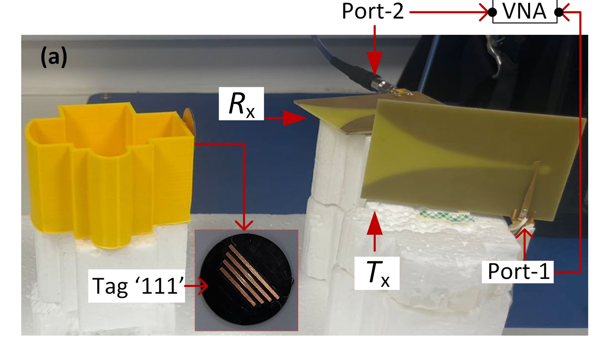

Derek Yang
Building machine-learning systems that survive contact with real physical data.
MSc Electronic & Electrical Engineering at UCC • Research Intern at Tyndall National Institute.
Focusing on RF sensing, domain shift, ML evaluation, signal processing, and research engineering.
Selected Work
Chipless RFID Recognition Under Physical Distribution Shift
Question
Can a model trained under familiar physical conditions recognise tags under a genuinely unseen measurement condition?
Work
- Strict-DG & leakage-aware evaluation
- Representation and physical-shift diagnostics
- DG / adaptation hypothesis testing
- Reproducible research and audit governance
Conclusion
The task was learnable under familiar conditions, but transfer to the held physical condition fell close to chance. Tested source-only DG methods did not establish reliable improvement.

Patient-Specific EEG Seizure-Event Detection Under Engineering Constraints
Traces scalp EEG from signal processing and compact feature engineering through patient-specific classical ML, event-level detection, and deployment feasibility.
- Spectral, synchrony, and temporal feature engineering
- Patient-specific Random Forest with fold-local feature selection
- Event sensitivity, false alarms per hour, and detection delay
- Resource estimates and explicit streaming limitations
EEG Multirate DSP with Polyphase FIR Optimisation
Designs and validates an exact 500 Hz → 32 Hz EEG resampling chain with specification-driven anti-alias filtering and an efficient polyphase implementation.
- 8/125 rational multirate conversion with a 4,145-tap Kaiser FIR
- Direct-form versus polyphase numerical-equivalence validation
- ~1000× theoretical FIR-operation reduction and ~119× measured median speed-up
- PSD, band-power, entropy, SEF95, and IWMF preservation checks
Capabilities
Machine Learning
- PyTorch / scikit-learn
- Deep learning
- Domain shift & generalisation
- Few-shot & statistical evaluation
Signal & Data
- Signal processing
- RF spectroscopy
- EEG processing
- Scientific data analysis
Research Engineering
- Leakage-aware evaluation
- Reproducible experiment design
- Ablations & matched controls
- Git-based research governance
Engineering
- Python scientific stack
- Git
- Scientific visualisation
- Deployment-aware ML
Research Approach & About
How I Work
- Problem Formulation
- Define what generalisation actually means before optimizing a model.
- Evaluation
- Separate genuine held-condition transfer from target-informed adaptation.
- Diagnosis
- Use controls, ablations, representation probes and physical evidence to understand failure.
- Engineering
- Keep experiments reproducible, auditable and traceable.
- Communication
- Turn a complex technical investigation into evidence that another researcher can inspect.
About Derek
Derek Yang is completing an MSc in Electronic & Electrical Engineering at University College Cork and has worked as a research intern at Tyndall National Institute.
His recent work combines machine learning, signal processing and physical sensing, with particular attention to distribution shift, rigorous evaluation and reproducible research workflows.
He is interested in research and engineering roles where ML must work with real-world signals rather than only benchmark datasets.